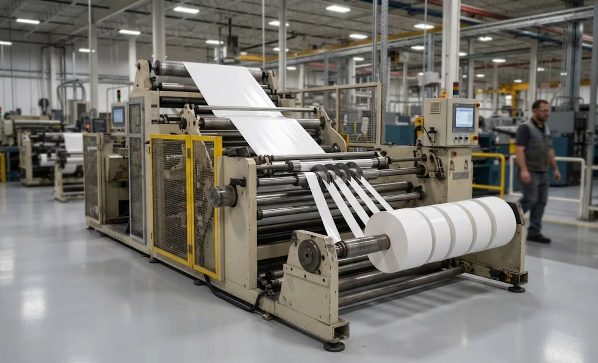
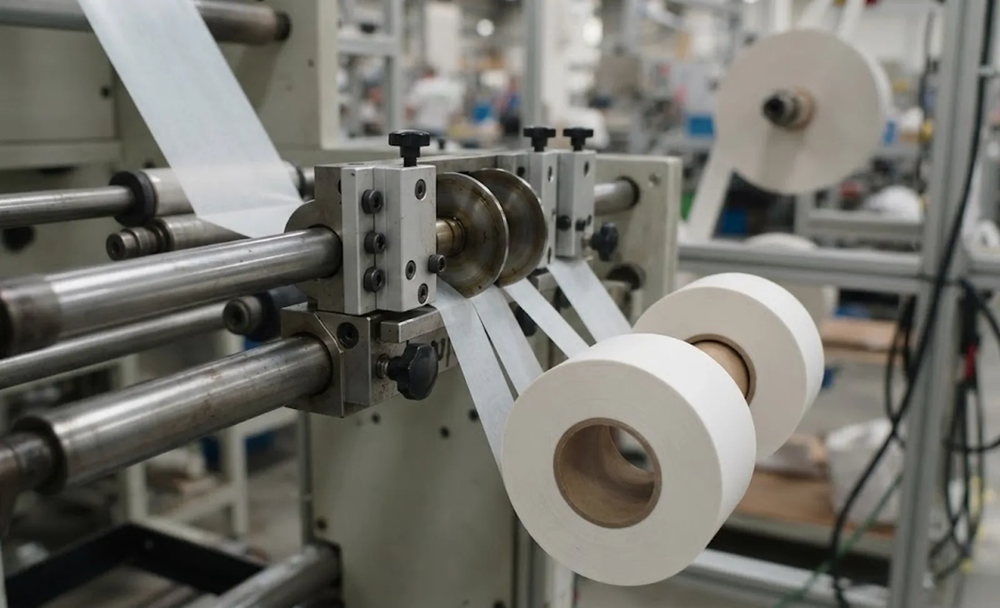

Published October 6, 2026 | By HDPTH Technical Editorial Team

Release liner looks like ordinary film until you run it. The silicone that lets a label release also lowers the web’s friction against rollers and nips; the liner is often thinner than the face material, so it suffers first when tension is wrong; and every slit edge exposes adhesive that bleeds, whiskers, and glues neighbouring layers into a solid block in the warehouse. A converter who buys a slitter quoted for “film and paper” and then runs labelstock discovers the gap within the first shift.
What silicone changes in the specification
Three properties should appear explicitly in your enquiry:
- Low friction: the web slips on idlers and in pull nips, so tension measured elsewhere does not describe what the web sees. The answer is independent, measured tension zones with load-cell control at the unwind, draw station and rewind.
- Caliper sensitivity: liners down to 30–50 microns are common in filmic labelstock, and gauge bands in the parent roll concentrate stress. The machine must control tension per millimetre of width, hold it through acceleration, and taper it as the roll builds — see taper tension.
- Adhesive edges: every slit edge is a source of blocking. Specify edge quality (no adhesive whiskers) and how cut edges are handled at the rewind. Curl is the fourth silent factor — ask what the contact surfaces are made of and whether nip pressure is adjustable and displayed.
Tension control: the numbers to demand in writing
This is where quotes differ most. Insist that the builder states in the offer:
| Specification line | Why it matters for liner | What a real answer looks like |
|---|---|---|
| Minimum stable tension | Thin liners run at very low tension to avoid stretching | “0.05 N/mm, ±3% at running speed” — not “wide range” |
| Zone architecture | Silicone slip invalidates inferred tension | Load cells on unwind, draw and rewind; each zone tunable |
| Tension through acceleration | Speed changes dump inertia into the web | Documented regulation during a full-speed accel/decel |
| Taper profile | Roll hardness consistency for die-cutting feed | Programmable taper curve, stored in the machine recipe |

Cutting method on coated constructions
The classic methods divide sharply on liner work. Shear cutting gives the cleanest edge on paper liners and most laminates, but knife hardness, bevel angle and overlap must match the construction — a set tuned for kraft paper will flake silicone off glassine. Razor blades are gentler on thin filmic liners but dull faster against adhesive and need a disciplined sharpening routine. Score cutting is rarely acceptable: it bursts the edge and generates the adhesive dust that blocks rolls.
For mixed production, the answer is configurability: dual-method shafts, quick-change blade geometry, and automatic knife positioning if your width mix changes daily. Whatever the mix, the trial must use your material at your speed, and acceptance is the slit edge under magnification plus zero blocking in a 48-hour storage test.
Winding quality: buy a hardness window, not adjectives
Downstream, your rolls unwind on presses at speed; the failure mode is not “loose roll” but gauge variation — soft spots and hard bands that make the web breathe and the register drift. So specify winding as a measurable outcome: a hardness window in the units of your roll hardness gauge, measured across and along the finished roll, on your material. Add taper tension, an adjustable-pressure contact roll, and trim removal so waste never re-enters the roll — suppliers who guarantee a hardness window in writing are telling you their tension system works.
The buyer’s checklist before you sign
- Run your own trials — thinnest liner, widest laminate, fastest job — before the order, not after delivery.
- Get minimum tension, regulation accuracy and zone architecture as numbers in the offer.
- Define acceptance criteria: edge quality, hardness window, length accuracy, blocking test.
- Check changeover time for a realistic width change — with short runs, this costs more per year than top speed earns.
- Agree the spare parts baseline: blades, load cells, belts — with lead times in the contract.
Specifying a liner and labelstock line?
Send HDPTH your constructions — liner type, laminate, widths and speeds. We run the trial on your material, quote the tension and cutting configuration with numbers, and put the acceptance criteria in the contract.
Submit Your Project InquiryFrequently asked questions
Why does release liner need a different slitter rewinder than plain film?
Silicone lowers friction, so the web slips on idlers and nips; liners are thinner and more caliper-sensitive than the face material; and exposed adhesive edges bleed and block adjacent rolls. A plain-film machine will hunt on tension and produce rolls that feed badly on the label press. Demand low-tension stability and proven cutting on coated webs.
How low must the tension range go for thin liners?
A practical rule: the machine must hold a stable tension around 0.05 to 0.15 N per mm of web width for filmic liners, at running speed and through accelerations. Ask the builder to state the minimum controllable tension, the regulation accuracy at that setpoint, and whether the unwind, draw and rewind zones are measured independently with load cells. A spec sheet that only quotes maximum tension was not written for liner work.
What winding quality does a label converter actually need?
Rolls feed into die-cutting and printing presses where gauge variation becomes registration faults. Specify a hardness window measured across the roll face, tapered tension profiles, and straight burr-free edges with adhesive managed so layers do not block. A written wound-in tension guarantee, verified at FAT on your material, is worth more than an extra 50 metres per minute of top speed.
What should be tested at FAT for a release liner slitter?
Run your own liner and labelstock — including the thinnest liner and the widest construction you sell — at production speed, and measure four things: slit-edge condition under magnification, roll hardness profile across and along the roll, length and width accuracy over a full parent roll, and changeover time for a realistic width change. Written acceptance criteria for each, tied to payment milestones, turn a demonstration into a guarantee.
Why do liner-capable machines cost more, and is the premium justified?
Expect 20–30% above a basic film slitter of the same width and speed. The delta buys load-cell tension zones, covered contact rollers, dual-method knife shafts and pre-quote trial hours. Normalise competing quotes on the four specification lines and the FAT protocol — a tension system that almost works costs more in blocking claims than the delta saved.
Sources
- FINAT: the worldwide federation of the self-adhesive labelling industry — technical guidance on liner and labelstock converting
- Alexander Watson Associates: global release liner market and technology reviews
- ISO 186 series: paper and board — sampling and conditioning relevant to liner curl behaviour
- TAPPI: test methods for silicone coating, adhesion and roll hardness in converting